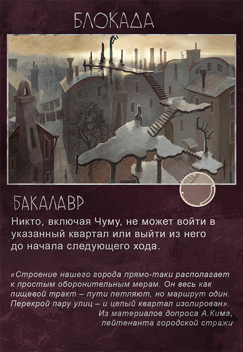
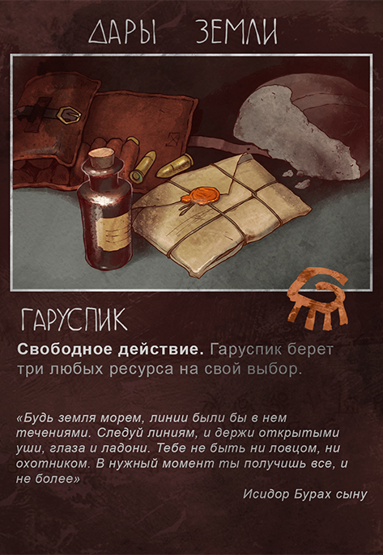
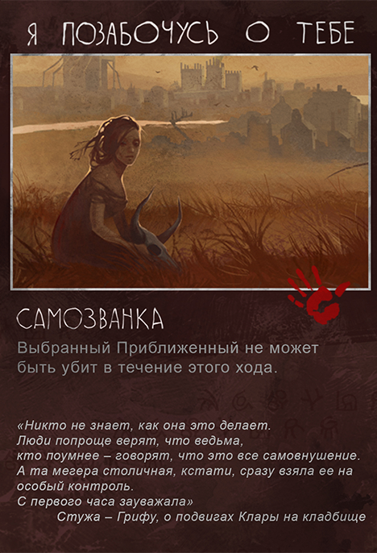

English
English
English
English
«Мор. Утопия» — это сюжетная survival adventure с открытым миром, которая выйдет на PC (Windows / MAC / Linux), PS4 и Xbox One
Сейчас настольную игру можно заказать в виде пледжа от $300 или в качестве отдельного бонуса за $65 (в случае, если ваш основной пледж включает в себя только виртуальные награды, не забудьте добавить $15 — именно столько будет стоить пересылка). После того, как игра будет издана, она поступит в самостоятельную продажу.
Улицы обрастают баррикадами, прилавки магазинов пустеют, мародеры грабят брошенные дома. По городу бродит невидимый убийца: безжалостный, бесплотный, беспристрастный. Никто не знает, как уберечься от него и кто его следующая жертва.
Кажется, что город обречен, но некоторые жители, приближенные к тайне его устройства, еще пытаются бороться. Их усилия и надежды направляются знаниями и волей трех выдающихся людей.
БакалаврДаниил Данковский, молодой столичный доктор, бакалавр медицинских наук. Он вооружен точными приборами, научным взглядом на мир и авторитетом среди правящих семей. |
ГаруспикАртемий Бурах, Гаруспик, изучавший медицину вдали от родины и недавно вернувшийся в город. Потомственный знахарь, унаследовавший свои знания от степных предков. |
СамозванкаКлара, Самозванка, девушка без прошлого, способная убить или исцелить касанием. Одни считают ее мошенницей, другие — святой. Где наука бессильна, в дело вступает мистика. |
Комплектация
|
Особенности
|
Настольная игра «Мор (Утопия)» сейчас находится в разработке. Мы еще только ищем форму, в которой игра предстанет вашему взору. Поэтому считаем нужным пояснить: некоторые интерфейсные решения могут быть изменены, и игровые элементы, представленные выше (карты, фишки и т.д.), в окончательной версии могут выглядеть иначе.
Ice-Pick Lodge — российская игростроительная студия, основанная в 2002 году. Мы верим, что игры должны не только развлекать игрока, но и давать ему пищу для ума. Прежде ледорубы не делали настольных игр, но теперь мы нашли мастеров, способных переложить цифровую историю в бумагу и фишки. Так родился этот «Мор».
© 2014 Ice-Pick Lodge · Все права защищены. Дизайн: Тамара Персикова; реализация: Don Reba.
{kind=link}
{kind=link}
{kind=link}